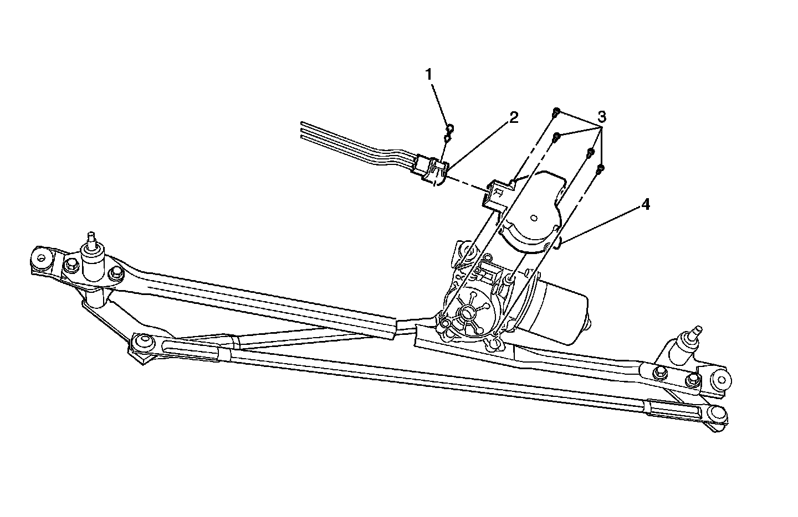

Wiper Motor Cover Replacement
WIPER MOTOR COVER REPLACEMENT
REMOVAL PROCEDURE
1. Turn the ignition key to the OFF position.

2. Open the hood.
3. Remove the radio antenna.
4. Remove the wiper arms.
5. Remove the air inlet panel.
6. Remove the connector position assurance (CPA) connector (1).
7. Disconnect the electrical connector (2) from the wiper motor cover (4).
8. Remove the 4 screws (3) that secure the cover to the motor.
9. Remove the cover (4) from the vehicle.
INSTALLATION PROCEDURE
1. Position the cover (4) to the wiper motor.
2. NOTE: Refer to Fastener Notice in Service Precautions.
Install the 4 screws (3) to the cover.
Tighten the 4 screws equally to 2.6 N.m (23 lb in).
3. Connect the electrical connector (2) and install the CPA.
4. Install the air inlet panel.
5. Install the wiper arms.
6. Install the radio antenna.
7. Close the hood.